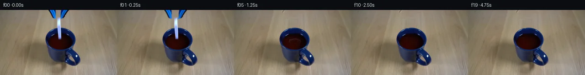

![首帧]()

Round 00
2026-11-05T00:26:39.010882+00:00像素候选变化代码 +325/−0inspection 更新
pixels 6ff76eee741bf0d4 · code 4879ea168b643273
查看本轮 generate.py 真实 diff
--- previous/generate.py
+++ current/generate.py
@@ -0,0 +1,325 @@
+"""Source-pixel animation with local reconstruction and analytic fluid effects."""
+from pathlib import Path
+import json
+import math
+import cv2
+import numpy as np
+from PIL import Image, ImageDraw
+from scipy.ndimage import gaussian_filter, map_coordinates
+from artifact_io import save
+
+ROOT = Path(__file__).resolve().parent
+W, H, SS = 256, 144, 4
+SOURCE = np.array(Image.open(ROOT / 'first_frame.png').convert('RGB'))
+Y, X = np.mgrid[:H, :W].astype(np.float32)
+
+
+def polygon_mask(points):
+ m = Image.new('L', (W * SS, H * SS))
+ d = ImageDraw.Draw(m)
+ d.polygon([(round(x * SS), round(y * SS)) for x, y in points], fill=255)
+ return np.asarray(m.resize((W, H), Image.Resampling.LANCZOS)).astype(np.float32) / 255
+
+
+def masks():
+ # The tool is separated into two jaws. Restrict thresholding to their
+ # measured area; retain antialiased edge pixels in the extraction.
+ rgb = SOURCE.astype(np.float32)
+ chroma = (rgb[..., 2] - rgb[..., 0] > 9) | (rgb.max(axis=2) < 105)
+ bounds = (Y <= 20) & (X >= 104) & (X <= 152)
+ tool_binary = (chroma & bounds).astype(np.uint8)
+ tool_binary = cv2.dilate(tool_binary, np.ones((3, 3), np.uint8))
+ tool_binary[Y > 21] = 0
+ left = tool_binary.astype(np.float32) * (X < 124)
+ right = tool_binary.astype(np.float32) * (X > 131)
+ # Fractional silhouette around the narrow, almost edge-on domino.
+ domino = polygon_mask([(125.1, 17.2), (132.0, 17.2),
+ (133.2, 36.0), (134.3, 59.8),
+ (134.0, 64.6), (128.0, 64.6),
+ (126.7, 57.0), (125.4, 45.0),
+ (124.7, 31.0), (124.6, 22.0)])
+ # Cover the mixed edge pixels too, using row-specific source differences.
+ core = ((X >= 125) & (X <= 134) & (Y >= 17) & (Y <= 64)
+ & (rgb[..., 2] - rgb[..., 0] > 25) & (rgb[..., 2] > 100))
+ domino = np.maximum(domino, core.astype(np.float32))
+ return left, right, domino
+
+
+LEFT, RIGHT, DOMINO = masks()
+REMOVAL = np.maximum.reduce([LEFT, RIGHT, DOMINO])
+
+
+def make_plate():
+ # Only the occluded object silhouettes are reconstructed. Table patches
+ # retain local photographic grain; ceramic and fluid are interpolated
+ # along a scanline, whose gradient follows the back of the mug.
+ plate = SOURCE.astype(np.float32).copy()
+ mask = (REMOVAL > .01).astype(np.uint8)
+ mask = cv2.dilate(mask, np.ones((3, 3), np.uint8))
+ for y in range(0, 67):
+ ids = np.flatnonzero(mask[y])
+ if not len(ids):
+ continue
+ groups = np.split(ids, np.flatnonzero(np.diff(ids) > 1) + 1)
+ for group in groups:
+ a, b = int(group[0]), int(group[-1])
+ lx, rx = max(0, a - 2), min(W - 1, b + 2)
+ # Use samples immediately outside the missing area and a gentle
+ # low frequency gradient, rather than crossing material edges.
+ lo = np.median(SOURCE[y, max(0, lx - 1):lx + 2], axis=0)
+ hi = np.median(SOURCE[y, rx - 1:min(W, rx + 2)], axis=0)
+ u = np.linspace(0, 1, b - a + 1)[:, None]
+ row = lo * (1 - u) + hi * u
+ if y <= 38:
+ # Nearby unoccluded wood, same row, only its fine texture.
+ donor_x = np.clip(np.arange(a, b + 1) + 40, 0, W - 1)
+ donor = SOURCE[y, donor_x].astype(np.float32)
+ fine = donor - gaussian_filter(donor, sigma=(2.0, 0))
+ row += fine * .55
+ plate[y, a:b + 1] = row
+ # The uppermost ceramic lip is elliptical: its apex lies behind the
+ # original domino. Restore that hidden few-pixel arc from adjacent lip.
+ for y in range(38, 44):
+ for x in range(123, 137):
+ if not mask[y, x]:
+ continue
+ top = 39.0 + ((x - 132.1) / 32.0) ** 2 * 24.7
+ coverage = np.clip(y - top + .7, 0, 1)
… diff truncated; 238 more lines …